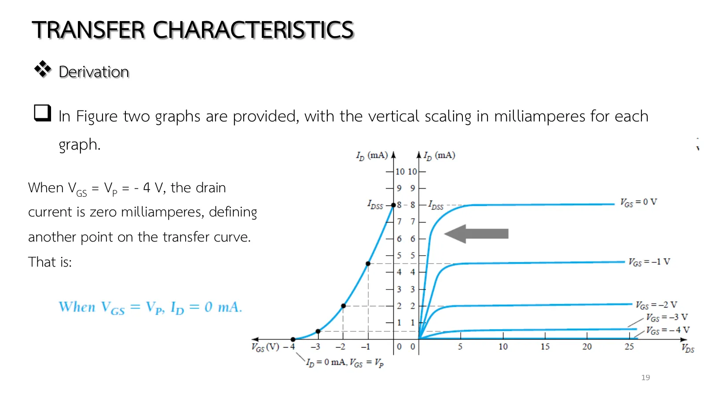
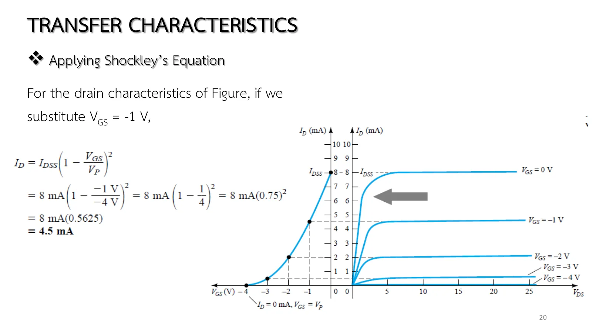
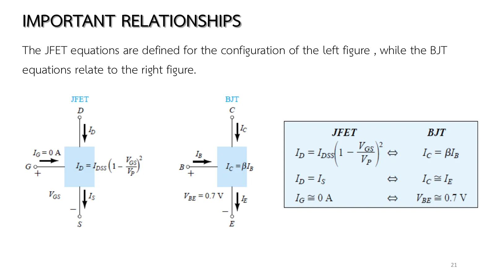

A bipolar junction transistor (BJT) is straightforward: double \(I_B\) and \(I_C\) doubles too, along the straight line \(I_C = \beta I_B\). A junction field-effect transistor (JFET) is not: for the device of Fig. 6.17, equal 1 V steps of \(V_{GS}\) from 0 to −4 V leave 8, 4.5, 2, 0.5 and 0 mA, nowhere near evenly spaced. All of it lives in one equation with a square, Shockley's equation, and the transfer curve it draws does not depend on the external network, which makes it the main tool of the bias analysis of pages 5.3–5.5. This page builds the curve from the two graphs of Fig. 6.17 with adjustable \(I_{DSS}\), \(V_P\), \(V_{GS}\) (section A), uses the equation and the shortcuts of Table 6.1, works Examples 6.1–6.2, and sets the JFET against the BJT (chapter 5 slides, pp. 17–22; Boylestad sections 6.3, 6.6 and 7.1).
ไม่ขึ้นกับวงจร: "The transfer characteristics defined by Shockley's equation are unaffected by the network in which the device is employed" วงจรเปลี่ยนได้แค่สมการของวงจรและจุดตัด (บทที่ 7) ไม่ใช่เส้นโค้งของอุปกรณ์
Shockley's equation (slide p. 17, Eq. 6.3): \(I_D = I_{DSS}(1 - V_{GS}/V_P)^2\). The control variable is \(V_{GS}\); \(I_{DSS}\) and \(V_P\) are constants of the device (from its data sheet). The square makes the relation nonlinear: a curve that steepens as \(|V_{GS}|\) decreases.
From the drain characteristics (slides pp. 18–19, Fig. 6.17): carry a horizontal line from the flat part of each \(V_{GS}\) curve leftward to that \(V_{GS}\) on the other axis to get a point of the transfer curve. Its ends are (0, \(I_{DSS}\)) and (\(V_P\), 0) (Eqs. 6.4–6.5).
Independent of the network: "The transfer characteristics defined by Shockley's equation are unaffected by the network in which the device is employed." A network can only change its own equation and the intersection (chapter 7), never the device curve.
Shortcuts (Table 6.1): \(V_{GS} = V_P/2\) gives \(I_D = I_{DSS}/4\) (Eq. 6.9) and \(I_D = I_{DSS}/2\) gives \(V_{GS} \cong 0.3V_P\) (Eq. 6.10); with the two ends these sketch the curve accurately enough for chapter 7, which mostly uses three points.
p-channel: the same equation with \(V_P\) and \(V_{GS}\) both positive; the curve is the mirror image (Example 6.2).
Important relationships (slides pp. 21–22, Table 6.2): \(I_G \cong 0\) and \(I_D = I_S\) for the JFET against \(V_{BE} \cong 0.7\) V and \(I_C \cong I_E\) for the BJT; \(I_C = \beta I_B\) against Shockley's equation. A JFET analysis usually starts from \(I_G\) = 0 and finds \(V_{GS}\) first, as a BJT analysis starts from \(V_{BE}\) = 0.7 V and finds \(I_B\).
Slide p. 17 writes the whole behaviour of a JFET on one line: \(I_D = I_{DSS}(1 - V_{GS}/V_P)^2\). The only variable we control is \(V_{GS}\); \(I_{DSS}\) and \(V_P\) are constants of the device, read from its data sheet. The square makes the relation nonlinear: the curve grows steeper and steeper as \(|V_{GS}|\) falls toward zero.
The last sentence of the slide matters as much as the equation: the curve does not depend on the network the JFET is placed in. The external circuit decides only where on this curve the operating point will sit.
สไลด์บทที่ 5 หน้า 17: สมการของ Shockley · แตะรูปเพื่อขยายChapter 5 slide p. 17: Shockley's equation · tap to enlarge
Slides pp. 18–19 set the two graphs of Fig. 6.17 side by side on the same \(I_D\) scale and find the two end points first: \(V_{GS}\) = 0 gives \(I_{DSS}\) on the vertical axis, and \(V_{GS} = V_P\) = −4 V gives zero current on the horizontal axis. Move \(V_{GS}\) and notice that a whole curve on the right shrinks to a single point on the left: in saturation \(V_{DS}\) no longer affects the current.
สไลด์หน้า 18: จุดแรก \(V_{GS}\) = 0 ให้ \(I_{DSS}\) (รูป 6.17) · แตะรูปเพื่อขยายSlide p. 18: the first point, \(V_{GS}\) = 0 gives \(I_{DSS}\) (Fig. 6.17) · tap to enlarge

สไลด์หน้า 19: จุดที่สอง \(V_{GS} = V_P\) ให้ \(I_D\) = 0 · แตะรูปเพื่อขยายSlide p. 19: the second point, \(V_{GS} = V_P\) gives \(I_D\) = 0 · tap to enlarge
The left graph is the transfer curve, the right one the drain characteristics of the same device, sharing the \(I_D\) scale. Move \(V_{GS}\) and its curve lights up while its saturation level is carried across to the left as a point of the transfer curve (the arrow of Fig. 6.17). Change \(I_{DSS}\) and \(V_P\) to see that these two values fix the whole curve, and show the points of Table 6.1 to see that four points suffice to sketch it.
1
ใช้สมการของ Shockley และจุดลัดของตาราง 6.1
Using Shockley's equation and the shortcuts of Table 6.1
Slide p. 20 works the first point for you: \(V_{GS}\) = −1 V gives \(8\ \text{mA} \times (0.75)^2\) = 4.5 mA, the minus signs of \(V_{GS}\) and \(V_P\) cancelling exactly. Before opening the solution, guess: at \(V_{GS}\) = −2 V, half of \(V_P\), is the current half of \(I_{DSS}\)?

สไลด์หน้า 20: แทน \(V_{GS}\) = −1 V ได้ 4.5 mA · แตะรูปเพื่อขยายSlide p. 20: substituting \(V_{GS}\) = −1 V gives 4.5 mA · tap to enlarge
For the device of Fig. 6.17 (\(I_{DSS}\) = 8 mA, \(V_P\) = −4 V) find \(I_D\) at \(V_{GS}\) = −1, −2 and −3 V, then the \(V_{GS}\) that gives \(I_D\) = 4.5 mA from Eq. 6.8.
The simulation is a JFET whose \(V_{GS}\) is set by \(V_{GG}\) through \(R_G\) = 1 MΩ (no drop, since \(I_G\) = 0) with \(V_{DD}\) = 20 V across drain–source; each step changes \(V_{GG}\). Try it first.
2
ร่างเส้นโค้งถ่ายโอนจากสี่จุด
Sketching the transfer curve from four points
Boylestad Example 6.1 (รูป 6.18)
Boylestad Example 6.1 (Fig. 6.18)
โจทย์
จงร่างเส้นโค้งถ่ายโอนของ JFET ที่มี \(I_{DSS}\) = 12 mA และ \(V_P\) = −6 V ด้วยสี่จุดของตาราง 6.1
Problem
Sketch the transfer curve of a JFET with \(I_{DSS}\) = 12 mA and \(V_P\) = −6 V from the four points of Table 6.1.
ลองตอบก่อน
Try it first.
3
อุปกรณ์ p-channel
A p-channel device
Boylestad Example 6.2 (รูป 6.19) · สไลด์หน้า 12–13
Boylestad Example 6.2 (Fig. 6.19) · slides pp. 12–13
โจทย์
จงร่างเส้นโค้งถ่ายโอนของ JFET p-channel ที่มี \(I_{DSS}\) = 4 mA และ \(V_P\) = +3 V
Problem
Sketch the transfer curve of a p-channel JFET with \(I_{DSS}\) = 4 mA and \(V_P\) = +3 V.
In the simulation \(V_{DD}\) puts its negative terminal at the drain (\(V_{DS}\) = −12 V) and \(V_{GG}\) its positive terminal at the gate; note the gate arrow pointing out. Try it first.
The BJT analysis of chapter 4 started from \(V_{BE} \cong 0.7\) V. Slide p. 21 (Table 6.2) sets the JFET rules beside the BJT ones line by line: \(I_G \cong 0\) in place of \(V_{BE} \cong 0.7\) V, \(I_D = I_S\) in place of \(I_C \cong I_E\), and Shockley's equation in place of \(I_C = \beta I_B\).
Slide p. 22 traces every difference back to the controlling variable: a BJT is controlled by a current, a field-effect transistor (FET) by a voltage. The first two relations hold for every FET; the input–output equation is Shockley's for the JFET and the depletion-type metal-oxide-semiconductor FET (MOSFET), and \(I_D = k(V_{GS} - V_T)^2\) for the enhancement-type MOSFET. Pages 5.3–5.5 use these rules in every circuit.

สไลด์หน้า 21: ตาราง 6.2 เทียบ JFET กับ BJT · แตะรูปเพื่อขยายSlide p. 21: Table 6.2, JFET against BJT · tap to enlargeสไลด์หน้า 22: ความสัมพันธ์ทั่วไปของการวิเคราะห์ไบแอส FET (สมการ 7.1–7.4) · แตะรูปเพื่อขยายSlide p. 22: the general relationships of FET bias analysis (Eqs. 7.1–7.4) · tap to enlarge
In section A set \(I_{DSS}\) = 8 mA, \(V_P\) = −4 V and move \(V_{GS}\) from 0 to −4 V in 1 V steps: read \(I_D\) = 8, 4.5, 2, 0.5, 0 mA, unevenly spaced.
Keep \(V_P\) and double \(I_{DSS}\): every point of the curve doubles (a vertical scaling), while \(V_P\) stretches or squeezes the curve horizontally.
Show the points of Table 6.1: the \(V_P/2\) point is always at a quarter of the height, whatever \(I_{DSS}\), \(V_P\) you choose.
Try this 2 — the inverse
Problem 1, step 4: given \(I_D\) = 2 mA, \(V_{GS} = -4(1 - \sqrt{0.25}) = -2\) V, agreeing with step 2.
Problem 3: write the p-channel \(V_{GS}\) for \(I_D\) = 1 mA with Eq. 6.8: \(3(1 - \sqrt{0.25}) = +1.5\) V; the positive sign comes from \(V_P\) by itself.
![Chapter 5 slide 17, Transfer Characteristics, derivation: the relationship between I_D and V_GS is defined by Shockley's equation, I_D = I_DSS (1 − V_GS/V_P)², with V_GS marked as the control variable and I_DSS, V_P as constants; the squared term of the equation will result in a nonlinear relationship between I_D and V_GS, producing a curve that grows exponentially with decreasing magnitudes of V_GS; the transfer characteristics defined by Shockley's equation are unaffected by the network in which the device is employed.](slides/ch5/p17.webp)

![Chapter 5 slide 22, Introduction (to FET biasing): another distinct difference between the analysis of BJT and FET transistors is that the input controlling variable for a BJT transistor is a current level, while for the FET a voltage is the controlling variable; the general relationships that can be applied to the dc analysis of all FET amplifiers are I_G ≅ 0 A and I_D = I_S; for JFETs and depletion-type MOSFETs, Shockley's equation is applied to relate the input and output quantities, I_D = I_DSS (1 − V_GS/V_P)²; for enhancement-type MOSFETs, the following equation is applicable: I_D = k (V_GS − V_T)².](slides/ch5/p22.webp)